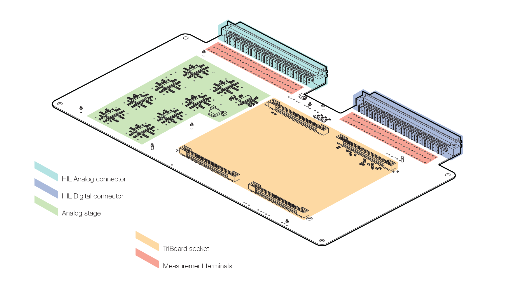

Detailed description
Detailed description of the HIL Infineon TriBoard interface
The board features the following key sections, as shown in Figure 1.
- HIL Analog connector
- HIL Digital connector
- Analog stage
- TriBoard FTSH plug connectors
- Measurement terminals

HIL Analog I/O
32 HIL Analog Outputs (AO) and 2 HIL Analog Input (AI) are routed from the DIN41612 socket (HIL side) to the FTSH connectors (TriBoard side).
| HIL Analog Output | TriBoard analog input | HIL Analog Input | TriBoard Resolver PWM |
|---|---|---|---|
| AO1 | AN46 | AI1 | P00.5 |
| AO2 | AN47 | AI2 | P00.6 |
| AO3 | AN43 | ||
| AO4 | AN42 | ||
| AO5 | AN30 | ||
| AO6 | AN39 | ||
| AO7 | AN29 | ||
| AO8 | AN38 | ||
| AO9 | AN15 | ||
| AO10 | AN14 | ||
| AO11 | AN13 | ||
| AO12 | AN12 | ||
| AO13 | AN10 | ||
| AO14 | AN9 | ||
| AO15 | AN6 | ||
| AO16 | AN5 | ||
| AO17 | AN28 | ||
| AO18 | AN11 | ||
| AO19 | AN4 | ||
| AO20 | AN27 | ||
| AO21 | AN26 | ||
| AO22 | AN37 | ||
| AO23 | AN1 | ||
| AO24 | AN25 | ||
| AO25 | AN23 | ||
| AO26 | AN33 | ||
| AO27 | AN34 | ||
| AO28 | AN22 | ||
| AO29 | AN19 | ||
| AO30 | AN36 | ||
| AO31 | AN35 | ||
| AO32 | AN18 |
The HIL Analog Outputs undergo a level shifting process from a range of +/-10 V to 0-5 V. This level shifting is performed to ensure compatibility with the analog inputs of the TriBoard. The specific equation used for this level shifting process can be expressed as follows:
The resolver PWM signal outputs undergo digital-to-analog conversion via a digital-to-analog converter (DAC). The resulting analog signals are subsequently routed to analog input pins on the Hardware-in-the-Loop (HIL) device.
In addition to routing the converted analog signal to an analog input pin on the HIL device, the digital signals from the PWM signal are also routed to the digital input pins of the HIL device.
HIL Digital I/O
28 HIL Digital Inputs (DI) and 16 HIL Digital Outputs (DO) are routed from the DIN41612 socket (HIL side) to the FTSH connector (TriBoard side).
| HIL Digital Output signal | TriBoard Digital Input signal |
|---|---|
| DO1 | P34.1 |
| DO2 | P34.2 |
| DO3 | P34.3 |
| DO4 | P34.4 |
| DO5 | P34.5 |
| DO6 | P21.6 |
| DO7 | P21.7 |
| DO8 | P21.2 (Emergency) |
| DO9 | P21.3 |
| DO10 | P21.4 |
| DO11 | P21.5 |
| DO12 | P21.1 |
| DO13 | P21.0 |
| DO14 | ESR0# |
| DO15 | ESR1# |
| DO16 | PORST# (Reset) |
| HIL Digital Input signal | TriBoard Digital Output signal |
|---|---|
| DI1 | P02.0 |
| DI2 | P02.1 |
| DI3 | P02.2 |
| DI4 | P02.3 |
| DI5 | P02.4 |
| DI6 | P02.5 |
| DI7 | P02.9 |
| DI8 | P02.10 |
| DI9 | P02.11 |
| DI10 | P02.6 |
| DI11 | P02.7 |
| DI12 | P02.8 |
| DI13 | P00.6 (Resolver PWM) |
| DI14 | P00.5 (Resolver PWM) |
| DI15 | P22.2 |
| DI16 | P22.3 |
| DI17 | P22.0 |
| DI18 | P22.1 |
| DI19 | P22.11 |
| DI20 | P22.10 |
| DI21 | P22.9 |
| DI22 | P22.8 |
| DI23 | P22.4 |
| DI24 | P22.5 |
| DI25 | P22.6 |
| DI26 | P22.7 |
| DI27 | P20.13 |
| DI28 | P20.12 |
Connector
While various evaluation boards share a common pinout, TriBoard Interface was tested with TC399 and designed with the following TriBoards in mind:
- TC399 TriBoard
- TC49x Triboards
Power Supply
By default, the TriBoard Interface receives power from the HIL (Hardware-in-the-Loop) device's +12 V supply through a diode. However, the TriBoard package is equipped with a 12 V power adapter and has the capability to operate in standalone mode, where it can be powered directly using the provided adapter.
The TriBoard's maximum estimated power consumption at 12 V falls within the range of 0.5 A to 1 A. If the power consumption is 0.5 A or lower, it can be directly powered from the +12 V supplies of the HIL4 and HIL6 devices. In this case, there is no need for an external 12 V power adapter.
However, if the power consumption exceeds 0.5 A, the TriBoard can still be directly powered from the +12 V supply of the HIL6 device. Again, no external 12 V power adapter is required.
"Infineon" and "AURIXTM TriBoard" are registered trademarks of Infineon Technologies AG in Germany and/or other countries.